- 00 开篇词 入门Spark，你需要学会“三步走”.md.html
- 01 Spark：从“大数据的Hello World”开始.md.html
- 02 RDD与编程模型：延迟计算是怎么回事？.md.html
- 03 RDD常用算子（一）：RDD内部的数据转换.md.html
- 04 进程模型与分布式部署：分布式计算是怎么回事？.md.html
- 05 调度系统：如何把握分布式计算的精髓？.md.html
- 06 Shuffle管理：为什么Shuffle是性能瓶颈？.md.html
- 07 RDD常用算子（二）：Spark如何实现数据聚合？.md.html
- 08 内存管理：Spark如何使用内存？.md.html
- 09 RDD常用算子（三）：数据的准备、重分布与持久化.md.html
- 10 广播变量 & 累加器：共享变量是用来做什么的？.md.html
- 11 存储系统：数据到底都存哪儿了？.md.html
- 12 基础配置详解：哪些参数会影响应用程序稳定性？.md.html
- 13 Spark SQL：让我们从“小汽车摇号分析”开始.md.html
- 14 台前幕后：DataFrame与Spark SQL的由来.md.html
- 15 数据源与数据格式：DataFrame从何而来？.md.html
- 16 数据转换：如何在DataFrame之上做数据处理？.md.html
- 17 数据关联：不同的关联形式与实现机制该怎么选？.md.html
- 18 数据关联优化：都有哪些Join策略，开发者该如何取舍？.md.html
- 19 配置项详解：哪些参数会影响应用程序执行性能？.md.html
- 20 Hive + Spark强强联合：分布式数仓的不二之选.md.html
- 21 Spark UI（上）：如何高效地定位性能问题？.md.html
- 22 Spark UI（下）：如何高效地定位性能问题？.md.html
- 23 Spark MLlib：从“房价预测”开始.md.html
- 24 特征工程（上）：有哪些常用的特征处理函数？.md.html
- 25 特征工程（下）：有哪些常用的特征处理函数？.md.html
- 26 模型训练（上）：决策树系列算法详解.md.html
- 27 模型训练（中）：回归、分类和聚类算法详解.md.html
- 28 模型训练（下）：协同过滤与频繁项集算法详解.md.html
- 29 Spark MLlib Pipeline：高效开发机器学习应用.md.html
- 30 Structured Streaming：从“流动的Word Count”开始.md.html
- 31 新一代流处理框架：Batch mode和Continuous mode哪家强？.md.html
- 32 Window操作&Watermark：流处理引擎提供了哪些优秀机制？.md.html
- 33 流计算中的数据关联：流与流、流与批.md.html
- 34 Spark + Kafka：流计算中的“万金油”.md.html
- 用户故事 小王：保持空杯心态，不做井底之蛙.md.html
- 结束语 进入时间裂缝，持续学习.md.html
- 捐赠
25 特征工程（下）：有哪些常用的特征处理函数？
你好，我是吴磊。
在上一讲，我们提到，典型的特征工程包含如下几个环节，即预处理、特征选择、归一化、离散化、Embedding和向量计算，如下图所示。
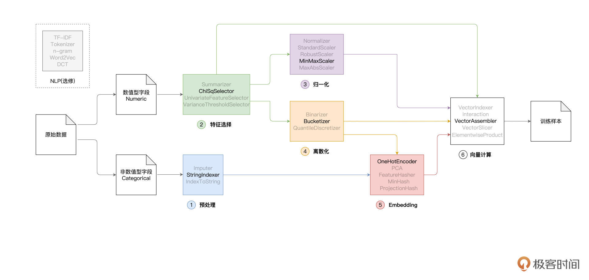
在上一讲，我们着重讲解了其中的前3个环节，也就是预处理、特征选择和归一化。按照之前的课程安排，今天这一讲，咱们继续来说说剩下的离散化、Embedding与向量计算。
特征工程是机器学习的重中之重，只要你耐心学下去，必然会不虚此行。这一讲的最后，我还会对应用了6种不同特征工程的模型性能加以对比，帮你深入理解特征工程中不同环节的作用与效果。
特征工程
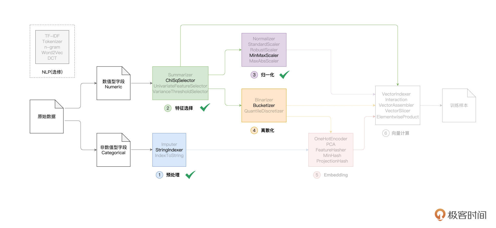
在上一讲，我们打卡到了“第三关”：归一化。因此，接下来，我们先从“第四关”：离散化说起。
离散化：Bucketizer
与归一化一样，离散化也是用来处理数值型字段的。离散化可以把原本连续的数值打散，从而降低原始数据的多样性（Cardinality）。举例来说，“BedroomAbvGr”字段的含义是居室数量，在train.csv这份数据样本中，“BedroomAbvGr”包含从1到8的连续整数。
现在，我们根据居室数量，把房屋粗略地划分为小户型、中户型和大户型。
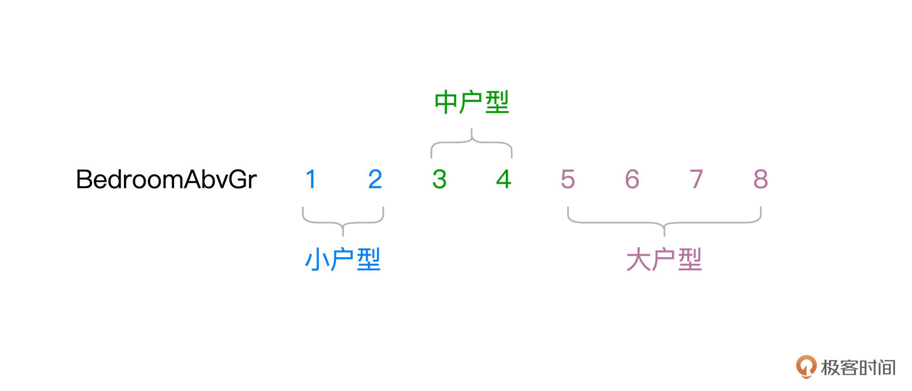
不难发现，“BedroomAbvGr”离散化之后，数据多样性由原来的8降低为现在的3。那么问题来了，原始的连续数据好好的，为什么要对它做离散化呢？离散化的动机，主要在于提升特征数据的区分度与内聚性，从而与预测标的产生更强的关联。
就拿“BedroomAbvGr”来说，我们认为一居室和两居室对于房价的影响差别不大，同样，三居室和四居室之间对于房价的影响，也是微乎其微。
但是，小户型与中户型之间，以及中户型与大户型之间，房价往往会出现跃迁的现象。换句话说，相比居室数量，户型的差异对于房价的影响更大、区分度更高。因此，把“BedroomAbvGr”做离散化处理，目的在于提升它与预测标的之间的关联性。
那么，在Spark MLlib的框架下，离散化具体该怎么做呢？与其他环节一样，Spark MLlib提供了多个离散化函数，比如Binarizer、Bucketizer和QuantileDiscretizer。我们不妨以Bucketizer为代表，结合居室数量“BedroomAbvGr”这个字段，来演示离散化的具体用法。老规矩，还是先上代码为敬。
// 原始字段
val fieldBedroom: String = "BedroomAbvGrInt"
// 包含离散化数据的目标字段
val fieldBedroomDiscrete: String = "BedroomDiscrete"
// 指定离散区间，分别是[负无穷, 2]、[3, 4]和[5, 正无穷]
val splits: Array[Double] = Array(Double.NegativeInfinity, 3, 5, Double.PositiveInfinity)
import org.apache.spark.ml.feature.Bucketizer
// 定义并初始化Bucketizer
val bucketizer = new Bucketizer()
// 指定原始列
.setInputCol(fieldBedroom)
// 指定目标列
.setOutputCol(fieldBedroomDiscrete)
// 指定离散区间
.setSplits(splits)
// 调用transform完成离散化转换
engineeringData = bucketizer.transform(engineeringData)
不难发现，Spark MLlib提供的特征处理函数，在用法上大同小异。首先，我们创建Bucketizer实例，然后将数值型字段BedroomAbvGrInt作为参数传入setInputCol，同时使用setOutputCol来指定用于保存离散数据的新字段BedroomDiscrete。
离散化的过程是把连续值打散为离散值，但具体的离散区间如何划分，还需要我们通过在setSplits里指定。离散区间由浮点型数组splits提供，从负无穷到正无穷划分出了[负无穷, 2]、[3, 4]和[5, 正无穷]这三个区间。最终，我们调用Bucketizer的transform函数，对engineeringData做离散化。
离散化前后的数据对比，如下图所示。
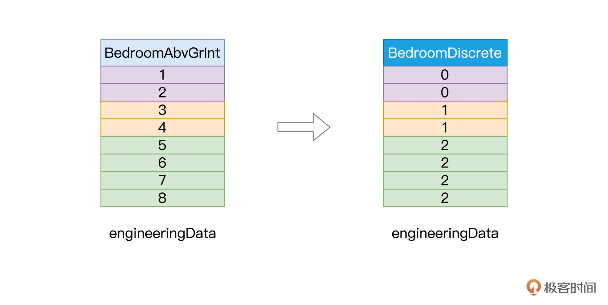
好啦，到此为止，我们以Bucketizer为代表，学习了Spark MLlib框架中数据离散化的用法，轻松打通了特征工程的第四关。
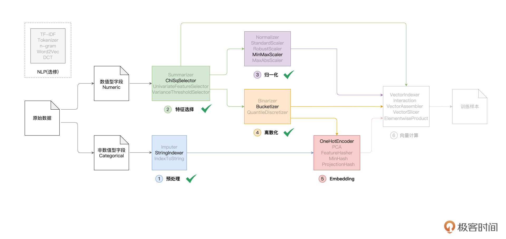
Embedding
实际上，Embedding是一个非常大的话题，随着机器学习与人工智能的发展，Embedding的方法也是日新月异、层出不穷。从最基本的热独编码到PCA降维，从Word2Vec到Item2Vec，从矩阵分解到基于深度学习的协同过滤，可谓百花齐放、百家争鸣。更有学者提出：“万物皆可Embedding”。那么问题来了，什么是Embedding呢？
Embedding是个英文术语，如果非要找一个中文翻译对照的话，我觉得“向量化”（Vectorize）最合适。Embedding的过程，就是把数据集合映射到向量空间，进而把数据进行向量化的过程。这句话听上去有些玄乎，我换个更好懂的说法，Embedding的目标，就是找到一组合适的向量，来刻画现有的数据集合。
以GarageType字段为例，它有6个取值，也就是说我们总共有6种车库类型。那么对于这6个字符串来说，我们该如何用数字化的方式来表示它们呢？毕竟，模型只能消费数值，不能直接消费字符串。
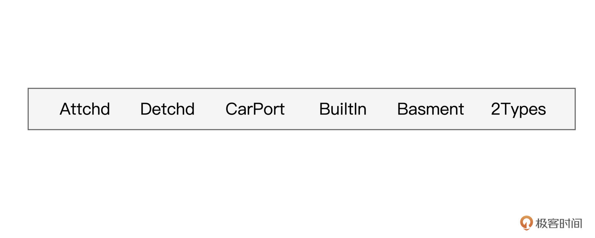
一种方法是采用预处理环节的StringIndexer，把字符串转换为连续的整数，然后让模型去消费这些整数。在理论上，这么做没有任何问题。但从模型的效果出发，整数的表达方式并不合理。为什么这么说呢？
我们知道，连续整数之间，是存在比较关系的，比如1 < 3，6 > 5，等等。但是原始的字符串之间，比如，“Attchd”与“Detchd”并不存在大小关系，如果强行用0表示“Attchd”、用1表示“Detchd”，逻辑上就会出现“Attchd”<“Detchd”的悖论。
因此，预处理环节的StringIndexer，仅仅是把字符串转换为数字，转换得到的数值是不能直接喂给模型做训练。我们需要把这些数字进一步向量化，才能交给模型去消费。那么问题来了，对于StringIndexer输出的数值，我们该怎么对他们进行向量化呢？这就要用到Embedding了。
作为入门课，咱们不妨从最简单的热独编码（One Hot Encoding）开始，去认识Embedding并掌握它的基本用法。我们先来说说，热独编码，是怎么一回事。相比照本宣科说概念，咱们不妨以GarageType为例，从示例入手，你反而更容易心领神会。
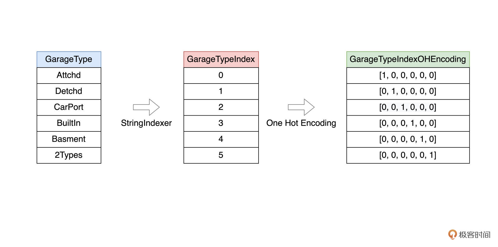
首先，通过StringIndexer，我们把GarageType的6个取值分别映射为0到5的六个数值。接下来，使用热独编码，我们把每一个数值都转化为一个向量。
向量的维度为6，与原始字段（GarageType）的多样性（Cardinality）保持一致。换句话说，热独编码的向量维度，就是原始字段的取值个数。
仔细观察上图的六个向量，只有一个维度取值为1，其他维度全部为0。取值为1的维度与StringIndexer输出的索引相一致。举例来说，字符串“Attchd”被StringIndexer映射为0，对应的热独向量是[1, 0, 0, 0, 0, 0]。向量中索引为0的维度取值为1，其他维度全部取0。
不难发现，热独编码是一种简单直接的Embedding方法，甚至可以说是“简单粗暴”。不过，在日常的机器学习开发中，“简单粗暴”的热独编码却颇受欢迎。
接下来，我们还是从“房价预测”的项目出发，说一说热独编码的具体用法。
在预处理环节，我们已经用StringIndexer把非数值字段全部转换为索引字段，接下来，我们再用OneHotEncoder，把索引字段进一步转换为向量字段。
import org.apache.spark.ml.feature.OneHotEncoder
// 非数值字段对应的目标索引字段，也即StringIndexer所需的“输出列”
// val indexFields: Array[String] = categoricalFields.map(_ + "Index").toArray
// 热独编码的目标字段，也即OneHotEncoder所需的“输出列”
val oheFields: Array[String] = categoricalFields.map(_ + "OHE").toArray
// 循环遍历所有索引字段，对其进行热独编码
for ((indexField, oheField) <- indexFields.zip(oheFields)) {
val oheEncoder = new OneHotEncoder()
.setInputCol(indexField)
.setOutputCol(oheField)
engineeringData= oheEncoder.transform(engineeringData)
}
可以看到，我们循环遍历所有非数值特征，依次创建OneHotEncoder实例。在实例初始化的过程中，我们把索引字段传入给setInputCol函数，把热独编码目标字段传递给setOutputCol函数。最终通过调用OneHotEncoder的transform，在engineeringData之上完成转换。
好啦，到此为止，我们以OneHotEncoder为代表，学习了Spark MLlib框架中Embedding的用法，初步打通了特征工程的第五关。
尽管还有很多其他Embedding方法需要我们进一步探索，不过从入门的角度来说，OneHotEncoder完全可以应对大部分机器学习应用。
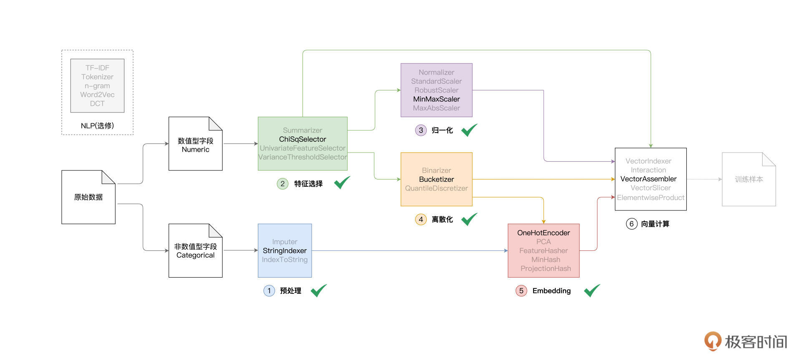
向量计算
打通第五关之后，特征工程“这套游戏”还剩下最后一道关卡：向量计算。
向量计算，作为特征工程的最后一个环节，主要用于构建训练样本中的特征向量（Feature Vectors）。在Spark MLlib框架下，训练样本由两部分构成，第一部分是预测标的（Label），在“房价预测”的项目中，Label是房价。
而第二部分，就是特征向量，在形式上，特征向量可以看作是元素类型为Double的数组。根据前面的特征工程流程图，我们不难发现，特征向量的构成来源多种多样，比如原始的数值字段、归一化或是离散化之后的数值字段、以及向量化之后的特征字段，等等。
Spark MLlib在向量计算方面提供了丰富的支持，比如前面介绍过的、用于集成特征向量的VectorAssembler，用于对向量做剪裁的VectorSlicer，以元素为单位做乘法的ElementwiseProduct，等等。灵活地运用这些函数，我们可以随意地组装特征向量，从而构建模型所需的训练样本。
在前面的几个环节中（预处理、特征选择、归一化、离散化、Embedding），我们尝试对数值和非数值类型特征做各式各样的转换，目的在于探索可能对预测标的影响更大的潜在因素。
接下来，我们使用VectorAssembler将这些潜在因素全部拼接在一起、构建特征向量，从而为后续的模型训练准备好训练样本。
import org.apache.spark.ml.feature.VectorAssembler
/**
入选的数值特征：selectedFeatures
归一化的数值特征：scaledFields
离散化的数值特征：fieldBedroomDiscrete
热独编码的非数值特征：oheFields
*/
val assembler = new VectorAssembler()
.setInputCols(selectedFeatures ++ scaledFields ++ fieldBedroomDiscrete ++ oheFields)
.setOutputCol("features")
engineeringData = assembler.transform(engineeringData)
转换完成之后，engineeringData这个DataFrame就包含了一列名为“features”的新字段，这个字段的内容，就是每条训练样本的特征向量。接下来，我们就可以像上一讲那样，通过setFeaturesCol和setLabelCol来指定特征向量与预测标的，定义出线性回归模型。
// 定义线性回归模型
val lr = new LinearRegression()
.setFeaturesCol("features")
.setLabelCol("SalePriceInt")
.setMaxIter(100)
// 训练模型
val lrModel = lr.fit(engineeringData)
// 获取训练状态
val trainingSummary = lrModel.summary
// 获取训练集之上的预测误差
println(s"Root Mean Squared Error (RMSE) on train data: ${trainingSummary.rootMeanSquaredError}")
好啦，到此为止，我们打通了特征工程所有关卡，恭喜你！尽管不少关卡还有待我们进一步去深入探索，但这并不影响我们从整体上把握特征工程，构建结构化的知识体系。对于没讲到的函数与技巧，你完全可以利用自己的碎片时间，借鉴这两节课我给你梳理的学习思路，来慢慢地将它们补齐，加油！
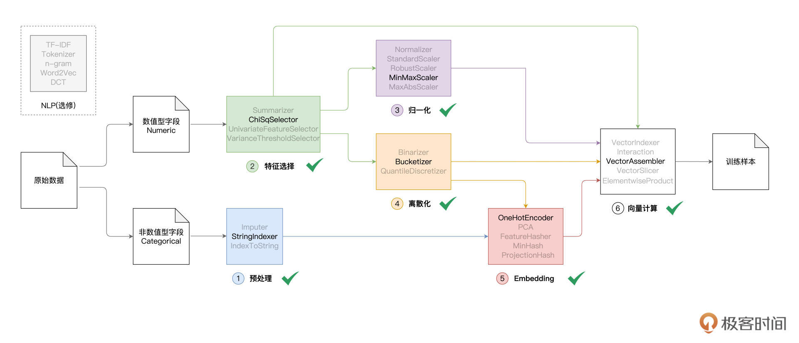
通关奖励：模型效果对比
学习过VectorAssembler的用法之后，你会发现，特征工程任一环节的输出，都可以用来构建特征向量，从而用于模型训练。在介绍特征工程的部分，我们花了大量篇幅，介绍不同环节的作用与用法。
你可能会好奇：“这些不同环节的特征处理，真的会对模型效果有帮助吗？毕竟，折腾了半天，我们还是要看模型效果的”。
没错，特征工程的最终目的，是调优模型效果。接下来，通过将不同环节输出的训练样本喂给模型，我们来对比不同特征处理方法对应的模型效果。
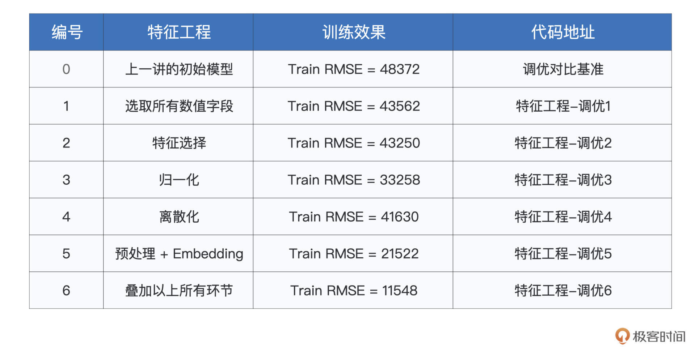
不同环节对应的代码地址如下：
可以看到，随着特征工程的推进，模型在训练集上的预测误差越来越小，这说明模型的拟合能力越来越强，而这也就意味着，特征工程确实有助于模型性能的提升。
对应特征工程不同环节的训练代码，我整理到了最后的“代码地址”那一列。强烈建议你动手运行这些代码，对比不同环节的特征处理方法，以及对应的模型效果。
当然，我们在评估模型效果的时候，不能仅仅关注它的拟合能力，更重要的是模型的泛化能力。拟合能力强，只能说明模型在训练集上的预测误差足够小；而泛化能力，量化的是模型在测试集上的预测误差。换句话说，泛化能力的含义是，模型在一份“未曾谋面”的数据集上表现如何。
这一讲，咱们的重点是特征工程，因此暂时忽略了模型在测试集上的表现。从下一讲的模型训练开始，对于模型效果，我们将同时关注模型这两方面的能力：拟合与泛化。
重点回顾
好啦，今天的内容讲完啦，我们一起来做个总结。今天这一讲，我们主要围绕着特征工程中的离散化、Embedding和向量计算展开，你需要掌握其中最具代表性的特征处理函数。
到此为止，Spark MLlib特征工程中涉及的6大类特征处理函数，我们就都讲完了。为了让你对他们有一个整体上的把握，同时能够随时回顾不同环节的作用与效果，我把每一个大类的特点、以及咱们讲过的处理函数，都整理到了如下的表格中，供你参考。
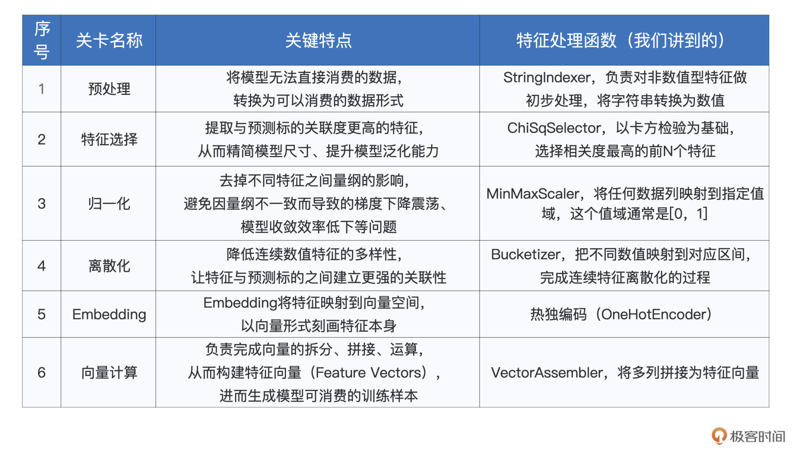
今天的内容很多，需要我们多花时间去消化。受2/8理论的支配，在机器学习实践中，特征工程往往会花费我们80%的时间和精力。由于特征工程制约着模型效果的上限，因此，尽管特征工程的步骤繁多、过程繁琐，但是我们千万不能在这个环节偷懒，一定要认真对待。
这也是为什么我们分为上、下两部分来着重讲解特征工程，从概览到每一个环节，从每一个环节的作用到它包含的具体方法。数据质量构筑了模型效果的天花板，特征工程道阻且长，然而行则将至，让我们一起加油！
每课一练
结合上一讲，对于我们介绍过的所有特征处理函数，如StringIndexer、ChiSqSelector、MinMaxScaler、Bucketizer、OneHotEncoder和VectorAssembler，你能说说他们之间的区别和共同点吗？
欢迎你在留言区记录你的收获与思考，也欢迎你向更多同事、朋友分享今天的内容，说不定就能帮他解决特征工程方面的问题。
© 2019 - 2023 Liangliang Lee. Powered by gin and hexo-theme-book.